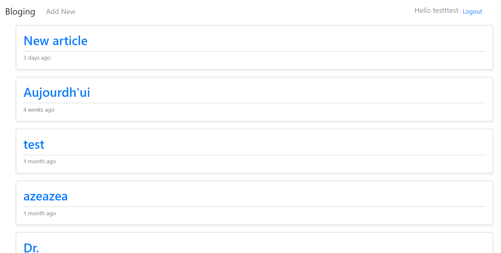

Blog app
Site type blog, reprenant les fonctionnalités de base
Site déployé à l'aide d'Heroku

Il y a en réalité ,deux entités, le côté serveur développé en Symfony et l'intégration d'API. Et la partie front developpé en React qui consomme l'API de notre cher serveur
Je vous donne également accès au dashboard de Symfony, si ça vous interesse (mais il y a que la partie easyAdmin) : Le serveur est par ici
Fonctionnalités
- Liste des articles
- Détail de l'article
- Ajour d'un article
- Liste commentaire
- Ajour commentaire
- Restriction sur les commentaires si non connecté
- Inscription / login
- Envoie de mail de confirmation
Technologies utilisés
- Symfony 5
- Heroku
- MySQL
- JQuery
- Bootstrap
- GIT
- VichUploaderBundle
- ApiPlatformBundle
- EasyAdmin